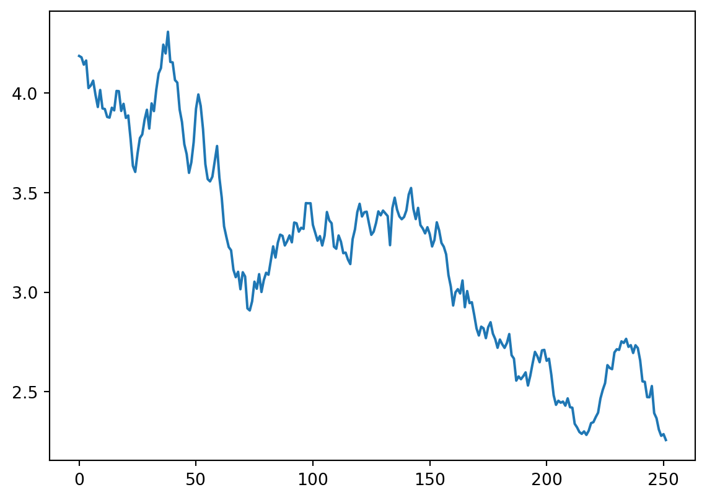
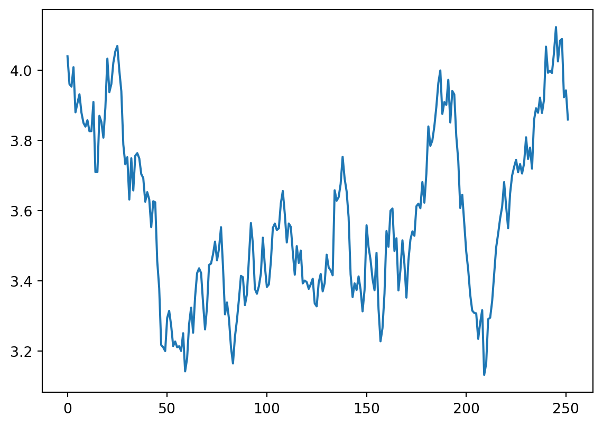
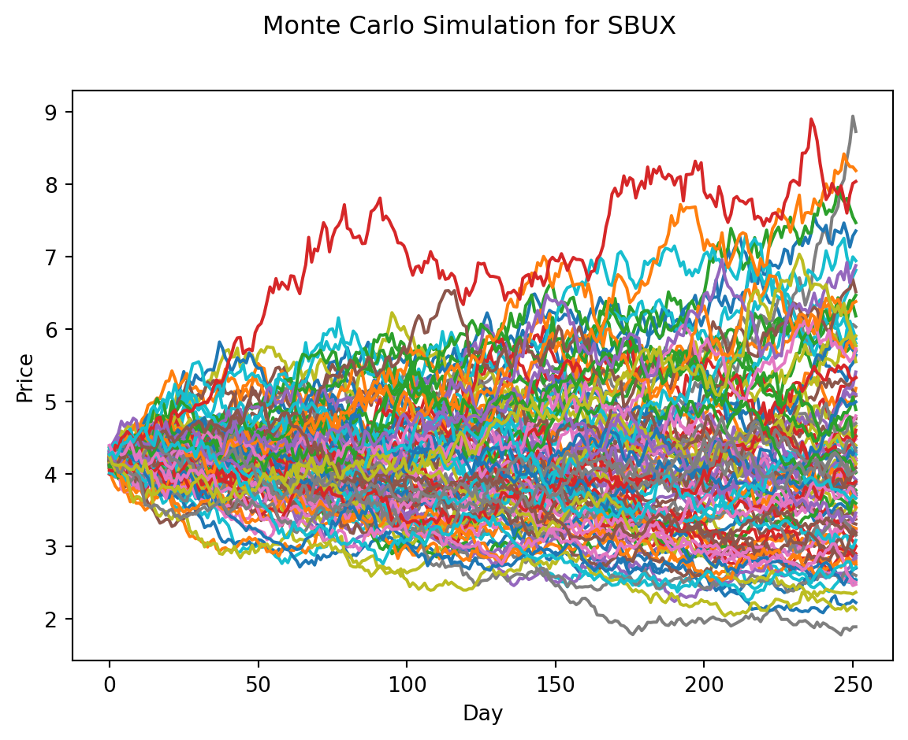

import numpy as np
start = 0
y = []
n = 1000
for i in range(n):
step = np.random.choice([-1, 1], p = [0.5, 0.5])
start += step
y.append(start)Introduction to Markov Chains
Markov Chain
Everything that will happen in the future only depends on what is happening right now.
A Markov chain is a random process with the Markov property. A random process or often called stochastic property is a mathematical object defined as a collection of random variables. A Markov chain has either discrete state space (set of possible values of the random variables) or discrete index set (often representing time) - given the fact, many variations for a Markov chain exists. Usually the term “Markov chain” is reserved for a process with a discrete set of times, that is a Discrete Time Markov chain (DTMC).
To develop better intuition about Markov chain, the simpler version of it is to model a basic random walk.
Random Walk 101
The situation: we will walk 1000 steps. At each step, we flip a fair coin and move 1 step to the right if it is head and one step to the left if it is tail.
From scratch
import matplotlib.pyplot as plt
plt.plot(y)
#plt.xlabel('Number of steps')
#plt.ylabel(r'$S_{n}$')Using financial data
Python code coming from this post
A Monte-Carlo simulation of a random-walk of a stock price does assume that the returns follow a normal distribution. A second assumption is that the past volatility of returns will continue (or be very similar) in the future. This is of course not totally the case.
Getting data and feature engineeriing
Getting data using the yfinance package.
import yfinance as yf
import pandas as pd
yo = yf.download("SBUX", start = "2005-01-01")
yo.to_csv("../../raw_data/sbux.csv")
yo['Adj Close'][-1]
yo.info()We have imported SBUX stock price data and stored them on disk. We’ll retrieve it using pandas and construct our returns and volatility variables.
import pandas as pd
sbux = pd.read_csv("../../raw_data/sbux.csv")
sbux.tail()
# get the daily returns and then filter on the last 2 years of trading.
# calculate volatiliy on these last years (not realistic of course)
daily_returns = sbux['Adj Close'].pct_change()
#sbux = sbux.tail(505)
daily_volat = daily_returns.std()
print(daily_volat)
sbux.info()0.01948403159171024
<class 'pandas.core.frame.DataFrame'>
RangeIndex: 4483 entries, 0 to 4482
Data columns (total 7 columns):
# Column Non-Null Count Dtype
--- ------ -------------- -----
0 Date 4483 non-null object
1 Open 4483 non-null float64
2 High 4483 non-null float64
3 Low 4483 non-null float64
4 Close 4483 non-null float64
5 Adj Close 4483 non-null float64
6 Volume 4483 non-null int64
dtypes: float64(5), int64(1), object(1)
memory usage: 245.3+ KBSingle simulation
import numpy as np
import matplotlib.pyplot as plt
look_back = 252
count = 0
price_list = []
last_price = sbux['Adj Close'].iloc[-1]
price = last_price * (1 + np.random.normal(0, daily_volat))
price_list.append(price)
for y in range(look_back):
if count == 251:
break
price = price_list[count] * (1 + np.random.normal(0, daily_volat))
price_list.append(price)
count += 1
plt.plot(price_list)
plt.show()
#price_list
An here would be another single simulation. It will of course look vastly different although it is build from the same normal distribution with same mean \(\mu = 0\) and sd \(\sigma = 0\).

Now we can re-use that code if we want to create 100’s of these simulations.
num_of_simulations = 100
model_ahead = 252
df = pd.DataFrame()
last_price_list = []
for x in range(num_of_simulations):
count = 0
price_list = []
last_price = sbux.iloc[-1]['Adj Close']
price = last_price * (1 + np.random.normal(0, daily_volat))
price_list.append(price)
for y in range(model_ahead):
if count == 251:
break
price = price_list[count] * (1 + np.random.normal(0, daily_volat))
price_list.append(price)
count += 1
df[x] = price_list
last_price_list.append(price_list[-1])
fig = plt.figure()
fig.suptitle("Monte Carlo Simulation for SBUX")
plt.plot(df)
plt.xlabel("Day")
plt.ylabel("Price")
plt.show()
With just 10 simulated random-walks on SBUX given the last 17 years of volatility, we can see that price could range between $40 to around $140 dollars over the next 252 trading days (one year).
Analysis of our MC simulation
print("Expected price: ", round(np.mean(last_price_list), 2))
print("Quantile (5%): ", np.percentile(last_price_list, 5))
print("Quantile (95%): ", np.percentile(last_price_list, 95))Expected price: 85.6
Quantile (5%): 51.877349251768564
Quantile (95%): 128.62538135167497plt.hist(last_price_list, bins=10)
plt.show()Markov Chain 101
The main concept to deal with in a markov chain is a transition matrix.
Transition Matrix
In a transition matrix, the rows are you starting state and columns are your end of state.
So with the below matrix, the probability to go from state A to state A is 0.8 and probability to go from state A to state D is 0.2. In this sense, all the rows of a transition matrix should always add up to 1.
state_A = [0.1, 0.4, 0.3, 0.2, 0]
state_B = [0.0, 0.5, 0.5, 0.0, 0]
state_C = [0.0, 0.0, 1.0, 0.0, 0]
state_D = [0.0, 0.0, 0.0, 0.0, 1.0]
state_E = [0.0, 0.0, 0.0, 0.5, 0.5]
transition_matrix = [state_A, state_B, state_C, state_D, state_E]We could also create a function to check if a transition matrix is indeed a properly formatted transition matrix to model a markov chain.
def check_markov_chain(m):
for i in range(0, len(m)):
if sum(m[i]) != 1:
return False
print("This is a correctly formatted transition matrix")
check_markov_chain(transition_matrix)This is a correctly formatted transition matrix